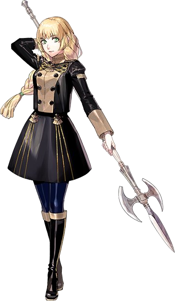

Biography Ingrid Brandl Galatea is the heir to House Galatea, a noble family of the Holy Kingdom of Faerghus. Raised with a strong sense of honor and responsibility, Ingrid dreams of becoming a knight despite the expectations placed upon her as the sole heir to her family's territory. Inspired by the legendary ideals of chivalry and the memory of those she admired growing up, she works tirelessly to improve her skills as both a warrior and future leader. As one of Dimitri's childhood friends, Ingrid shares a long history with several members of the Blue Lions.
Personality Ingrid is disciplined, hardworking, and dependable, always striving to meet the high standards she sets for herself. She values honesty, integrity, and responsibility, often acting as the voice of reason among her classmates. Although she can be serious and occasionally stubborn, Ingrid genuinely cares for those around her and is always willing to lend a helping hand. Her determination to pursue her dream, despite societal expectations, demonstrates both her courage and resilience.
Role in the Blue Lions Route Throughout the Blue Lions route, Ingrid represents the ideals of knighthood and the sacrifices that often accompany duty. As the story unfolds, she is forced to confront the realities of war and the difficult choices required of those who wish to protect others. Her journey explores themes of honor, perseverance, identity, and balancing personal aspirations with familial obligations. Ingrid's unwavering resolve and dedication make her one of the Blue Lions' most reliable allies.
Relationships Ingrid grew up alongside Dimitri, Felix, and Sylvain, forming lifelong friendships that continue throughout the story. Her close relationship with Dimitri is built on mutual respect, while her interactions with Felix and Sylvain often reveal both the warmth and complexity of their shared childhood. Ingrid also develops meaningful friendships with the other members of the Blue Lions, encouraging them through her honesty, work ethic, and steadfast loyalty.